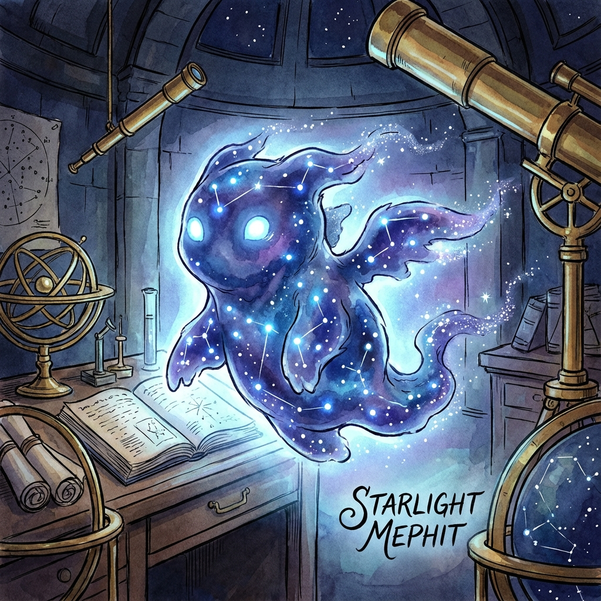

Starlight Mephit
Celestial Essence Elemental
Type: Small Elemental (Neutral)
CR: 1/2 (100 XP)
Description
A luminous, ethereal figure composed of swirling star-fields and cosmic dust. It glides silently, trailing motes of radiance behind it. Its eyes shimmer with otherworldly light. These mephits appear when Celestial Essence is disturbed, particularly in observatories or places aligned with celestial magic.
Stat Block
Armor Class: 11
Hit Points: 20 (5d6)
Speed: 30 ft., fly 30 ft.
STR8 (-1)
DEX12 (+1)
CON10 (+0)
INT8 (-1)
WIS11 (+0)
CHA12 (+1)
**Damage Resistances:** Radiant; Nonmagical attacks that are not silvered
**Condition Immunities:** Blinded
**Senses:** Darkvision 60 ft., passive Perception 10
**Languages:** Auran, Celestial (understands but can't speak)
**Condition Immunities:** Blinded
**Senses:** Darkvision 60 ft., passive Perception 10
**Languages:** Auran, Celestial (understands but can't speak)
Abilities & Actions
Luminous Form: The mephit sheds dim light in a 10-foot radius, which it can brighten or dim as a bonus action.
Astral Ray (Ranged Attack):
The mephit fires a concentrated beam of starlight.
*Ranged Weapon Attack:* +4 to hit, range 40/120 ft., one target
*Hit:* 5 (1d6 + 2) radiant damage
Cosmic Radiance (Action):
The mephit channels celestial power in a 20-foot cone of sparkling starlight. Creatures in the area must succeed on a Constitution save (DC 13) or take 7 (2d6) radiant damage. A creature that fails also glows (shedding dim light in a 5-foot radius) for 1 minute, giving advantage on the next attack against it. On a success, half damage and no glow.
Stellar Veil (Bonus Action; Recharge 5-6):
The mephit creates a 10-foot-radius zone of twilight centered on itself. For 1 round, this area becomes lightly obscured to normal vision (disadvantage on Perception checks). Allies with darkvision or celestial-based senses see normally. The mephit often uses this to reposition or help an ally close in unseen.
Glimpse of Infinity (Reaction):
When an enemy within 15 ft. casts a spell or uses an ability that requires a saving throw, the mephit warps fate, imposing disadvantage on that save. Flavored as the mephit briefly bending cosmic threads to hinder success.
Astral Ray (Ranged Attack):
The mephit fires a concentrated beam of starlight.
*Ranged Weapon Attack:* +4 to hit, range 40/120 ft., one target
*Hit:* 5 (1d6 + 2) radiant damage
Cosmic Radiance (Action):
The mephit channels celestial power in a 20-foot cone of sparkling starlight. Creatures in the area must succeed on a Constitution save (DC 13) or take 7 (2d6) radiant damage. A creature that fails also glows (shedding dim light in a 5-foot radius) for 1 minute, giving advantage on the next attack against it. On a success, half damage and no glow.
Stellar Veil (Bonus Action; Recharge 5-6):
The mephit creates a 10-foot-radius zone of twilight centered on itself. For 1 round, this area becomes lightly obscured to normal vision (disadvantage on Perception checks). Allies with darkvision or celestial-based senses see normally. The mephit often uses this to reposition or help an ally close in unseen.
Glimpse of Infinity (Reaction):
When an enemy within 15 ft. casts a spell or uses an ability that requires a saving throw, the mephit warps fate, imposing disadvantage on that save. Flavored as the mephit briefly bending cosmic threads to hinder success.
Combat Tactics
**Otherworldly & Serene:** Communicates in soft, musical hums; unleashes radiant fury when threatened.
**Tactical Approach:** Punishes clustered foes with Cosmic Radiance and uses Stellar Veil to protect itself or allies. Glimpse of Infinity can turn the tide of magical combat.
**Environment:** Found in observatories, celestial chambers, or areas where Celestial Essence has been disrupted.
**Tactical Approach:** Punishes clustered foes with Cosmic Radiance and uses Stellar Veil to protect itself or allies. Glimpse of Infinity can turn the tide of magical combat.
**Environment:** Found in observatories, celestial chambers, or areas where Celestial Essence has been disrupted.